El dibujo técnico a mano alzada es una herramienta de pensamiento. Antes de modelar en 3D, antes de conectar componentes, antes de fabricar, la mano sobre el papel permite verificar, detectar problemas y tomar decisiones. Esta sección propone un recorrido progresivo desde el trazo básico hasta la representación de piezas complejas de robótica.
Para poder transmitir ideas con seguridad, es necesario desarrollar un trazo limpio y decidido.
Existen tres
tipos de líneas que debemos evitar y una que buscamos:
Está sobre-construida: se repasa el mismo trazo muchas veces por inseguridad. Solución: trazá de una sola pasada, con decisión.
El pulso traiciona el trazo porque se mueve solo la muñeca sin guía del brazo. Solución: mover el brazo completo.
El trazo es tan suave que casi no se ve. Ocurre por miedo a equivocarse. Solución: presioná con decisión. Las aristas no pueden ser invisibles.
Una sola pasada, brazo completo, presión pareja. Así se ve una arista real: limpia, firme y decidida.
El primer ejercicio de calentamiento es dibujar muchas líneas rectas en una hoja de papel.
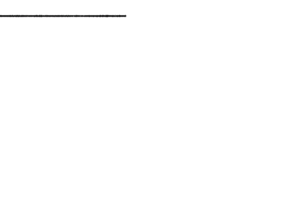
La proporción es la capacidad de estimar y reproducir tamaños relativos sin necesidad de herramientas de medición. Es fundamental para que los bocetos sean creíbles y comunicables.
Proporción es estimar tamaños relativos sin regla. Reproducí el ejercicio: trazá la línea, estimá el centro con una marca corta perpendicular, y recién después verificá.
De la teoría al papel: estimá a ojo, después medí y compará. La diferencia es tu margen de error.
La distancia entre tu estimación y la medida real es tu margen de error. Repetí el ejercicio hasta acortarlo: este gesto —dividir a ojo, después verificar— es la base para ubicar aristas, puntos medios de caras y centros de elipses más adelante.
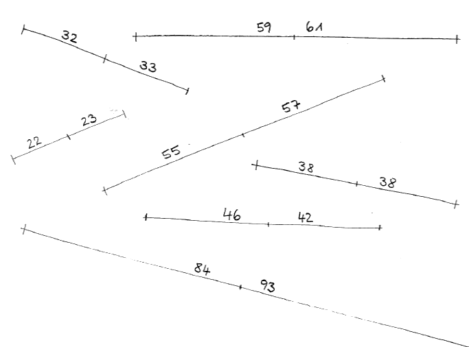
La perspectiva axonométrica es el sistema de representación tridimensional más utilizado en dibujo técnico. Las líneas paralelas permanecen paralelas (no convergen), lo que facilita la representación de dimensiones reales.
Seguí estos pasos para construir cualquier forma tridimensional:
Trazá el eje vertical y marcá los ángulos axonométricos (30° o 45°). Este eje es la columna vertebral de toda la figura.
Construí primero el volumen total que abarca la pieza. Las líneas deben ser paralelas a los ejes. Usá lápiz HB suave.
Dentro del prisma, marcá los planos inclinados, huecos o formas curvas usando las diagonales del cuadrado.
Con trazo firme (2B o microfibra), resaltá las aristas visibles. Las líneas constructivas quedan en segundo plano.
La misma construcción del material, reconstruida trazo a trazo. Las líneas paralelas permanecen paralelas: no convergen. Arrastrá el control o tocá "Reproducir".
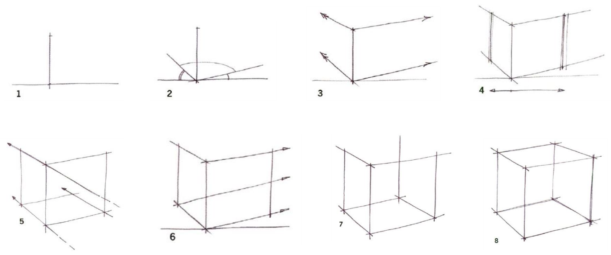
Para dibujarlo correctamente, se construye siempre dentro de un cuadrado en perspectiva —nunca a mano alzada libre.
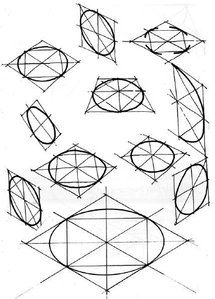
La forma más directa de construir un cilindro es partir de su caja delimitadora.
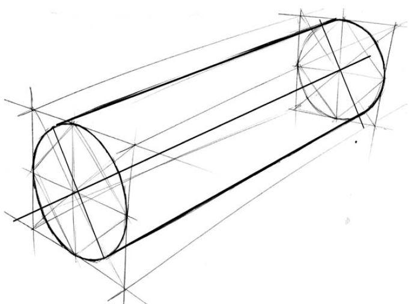
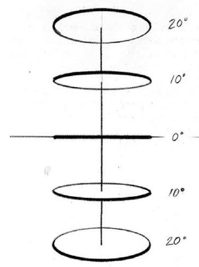
Todo lo anterior junto: elipse construida por diagonales y diámetros conjugados en cada una de las tres caras visibles. Las tres son del mismo tamaño; solo cambia la rotación.
Este complemento aplica el método de la elipse (diagonales → puntos medios → tangencia) a las tres caras del prisma a la vez, para mostrar cómo un mismo círculo cambia de orientación según el plano donde se apoya.
El siguiente ejercicio pone en juego todos los conocimientos anteriores: tipo de trazo, rectitud, paralelismo/perpendicularidad, proporcionalidad y estructuración. Se presentan 5 figuras de dificultad progresiva.
El foco está en la CALIDAD del trazo, no en la cantidad de figuras completadas.
Reproducí cada figura cuidando trazo, paralelismo y proporción. La dificultad aumenta de forma progresiva.
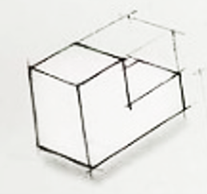
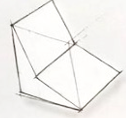
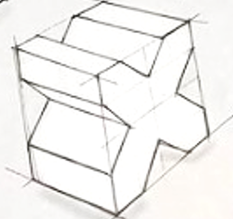
Con las habilidades de trazo, proporción y perspectiva desarrolladas, el siguiente paso es aplicarlas a la representación de piezas reales utilizadas en proyectos de automatización y robótica: soportes, vínculos, brackets, bridas y carcasas de sensores y actuadores.
Observá la pieza real o la referencia fotográfica y analizá su geometría base.
Identificá el prisma o cilindro contenedor principal.
Trazá suavemente la caja contenedora con lápiz HB.
Agregá los planos inclinados, huecos, agujeros y curvas.
Definí las aristas con 2B o microfibra.
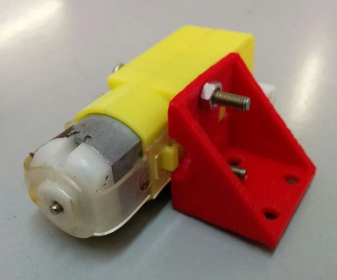
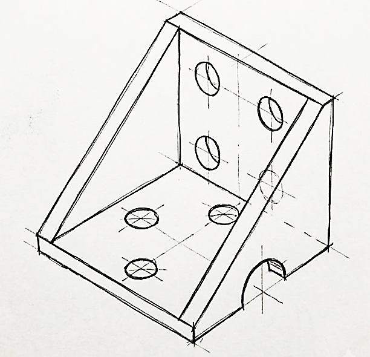
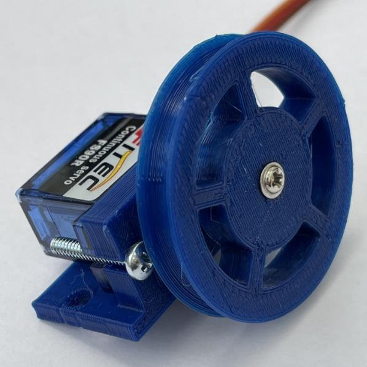
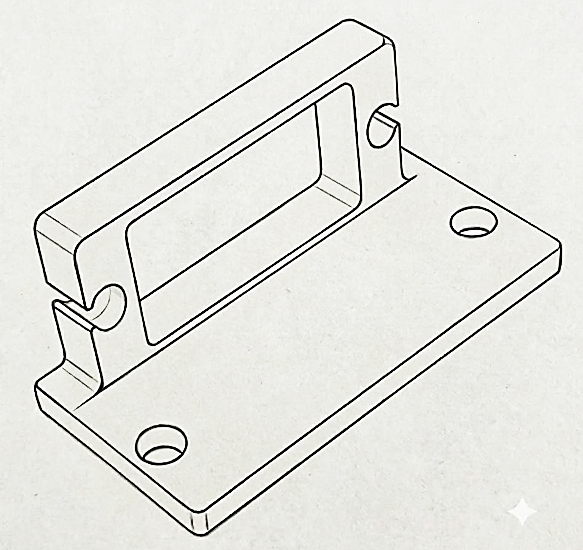
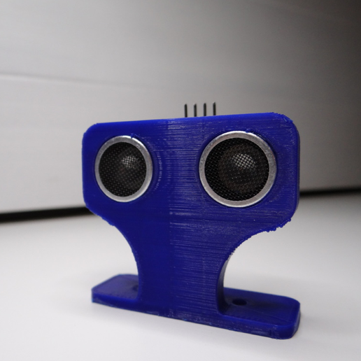
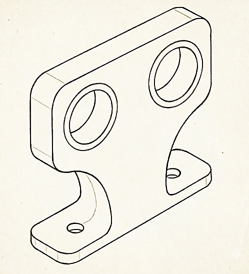
Además de brackets, servos y sensores, el material menciona las bridas entre las piezas típicas: soportes, vínculos, brackets, bridas y carcasas de sensores y actuadores.